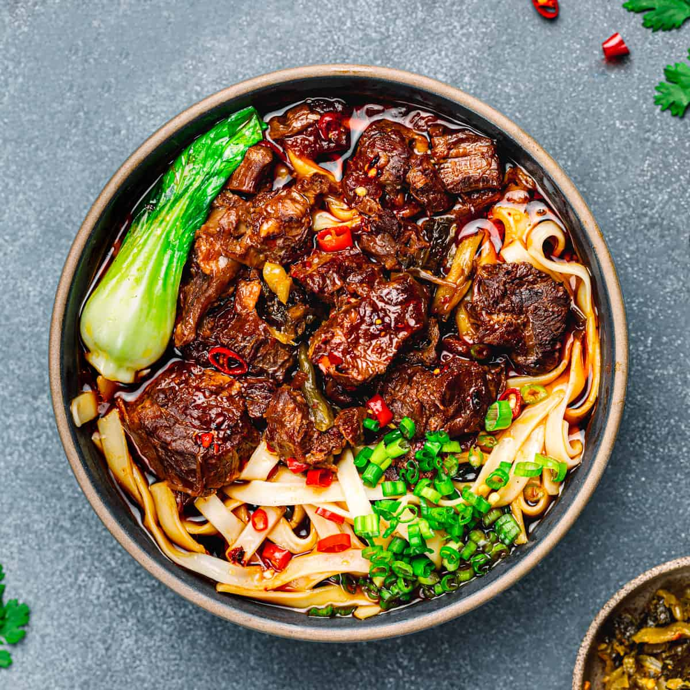

Beef Noodle Soup

Description
Beef Noodle Soup is a noodle soup made of stewed or braised beef, beef broth, vegetables, and noodles
and primarily exists in various forms throughout Eash and Southeast Asia.
Ingredients
- 6 quarts of water
- 2 bundles of flour noodles
- 2 pounds of beef shank
- 6 green onions
- 2 cups of bok choy
- 2 medium tomatoes
- 1 medium onion
- 8 slices of ginger
- 6 pods of star anise
- 1 teaspoon of salt
- 1 teaspoon of white pepper
- 6 cloves of garlic
- 2 red chiles
- dried bay leaf
- 3 tablespoons of spicy bean paste
- 1/2 cup of vegetable oil
- 1/2 cup of dark soy sauce
- 1/2 cup of rice wine
- 1/2 cup of light soy sauce